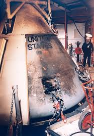
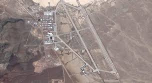

<!DOCTYPE html>
<html>

<head>
<title>Sistema Solar</title>
<meta charset = 'utf-8'>

</head>
<link rel= 'stylesheet' type='text/css' href='../css/estilos.css'>
</html>
<h1><body style = 'text-align:center;'><script>

/*
RAINBOW TEXT Script by Matt Hedgecoe (c) 2002
Featured on JavaScript Kit
For this script, visit http://www.javascriptkit.com
*/

// ********** cambia aquí

var text="Nasa" // tu texto
var speed=80 // velocidad de movimiento 


if (document.all||document.getElementById){
document.write('<span id="highlight">' + text + '</span>')
var storetext=document.getElementById? document.getElementById("highlight") : document.all.highlight
}
else
document.write(text)
var hex=new Array("00","14","28","3C","50","64","78","8C","A0","B4","C8","DC","F0")
var r=1
var g=1
var b=1
var seq=1
function changetext(){
rainbow="#"+hex[r]+hex[g]+hex[b]
storetext.style.color=rainbow
}
function change(){
if (seq==6){
b--
if (b==0)
seq=1
}
if (seq==5){
r++
if (r==12)
seq=6
}
if (seq==4){
g--
if (g==0)
seq=5
}
if (seq==3){
b++
if (b==12)
seq=4
}
if (seq==2){
r--
if (r==0)
seq=3
}
if (seq==1){
g++
if (g==12)
seq=2
}
changetext()
}
function starteffect(){
if (document.all||document.getElementById)
flash=setInterval("change()",speed)
}
starteffect()
</script></body></h1>

<body>


<div align="center"></div>
<h3>Definición de NASA</h3>
<h5 align="left">La NASA es un organismo estadounidense destinado a la exploración espacial. Sus siglas se corresponden con el término en inglés National Aeronautics and Space Administration (en español, Administración Nacional de Aeronáutica y del Espacio).</h5>
<h5 align="left">La NASA se fundó al final de los años 50 del siglo XX como respuesta de los americanos al inicio de la carrera espacial de los soviéticos, quienes lanzaron al espacio el Sputnik, el primer satélite artificial. De esta manera, ambos países protagonizaron durante las siguientes décadas la denominada carrera especial (space race) en el contexto de la guerra fría.</h5>
<div align="center"></div>
<h3>Proyectos estratégicos de impacto y trascendencia global</h3>
<h5 align="left">A lo largo de su historia la NASA ha impulsado algunos programas espaciales con un alto valor estratégico. El Programas Mercury tenía la finalidad de estudiar la posibilidad de que el hombre habitara otros planetas. El Programa Géminis fue el preámbulo del Programa Apolo, el proyecto de enviar un hombre a la Luna (que culminó satisfactoriamente en 1969). El Programa Apolo tuvo varias misiones, las cuales se orientaron a investigaciones sobre temas muy diversos: sobre fuentes de energía, sismología, campos magnéticos, tormentas solares, meteorología, etc. El conjunto de las investigaciones se tradujo en avances en campos diferentes, especialmente en el ámbito de las telecomunicaciones, la computación y la ingeniería.</h5>
<h3>Proyectos fallidos</h3>
<h5 align="left">La historia de la NASA también incorpora una lista de fracasos. El Apolo l tuvo un accidente en 1967 y los astronautas que tripulaban la nave fallecieron. El trasbordador Challenger se desintegró en el momento del despegue en 1968. En 2003 otro trasbordador espacial, el Columbia, tuvo un accidente al entrar en contacto con la atmósfera terrestre tras una misión de varias semanas.</h5>
<h5 align="left">La misión del Apolo Xlll pretendía alcanzar la Luna en 1970 pero tuvo graves problemas técnicos; sin embargo, gracias a la pericia de sus tripulantes se pudo evitar una gran catástrofe y todos sus miembros pudieron regresar a la Tierra (este episodio fue llevado al cine en la célebre película Apolo Xlll).</h5>
<div align="center"></div>
<h3>La cara oculta de la NASA</h3>
<h5 align="left">La actividad de la NASA ha suscitado muchos recelos. Por este motivo se habla de su lado oculto, es decir, intenciones no oficiales que se mantienen en secreto. Los supuestos secretos de la NASA son muy variados: construcciones humanas en la Luna que datan de la antigüedad, el contacto con extraterrestres o misiones con fines desconocidos. También hay investigaciones que comentan la información restringida de la NASA (el Área 51 es el nombre que recibe el departamento con proyectos confidenciales).</h5>
<div align="center"></div>

<tr>
<td><div align="center"><a href = 'planetas.html'></a><figcaption style = 'text-align:center;color:blue;'>Los planetas</figcaption></div></td>
</tr>
<tr>
<td><div align="center"><a href = 'historia.html'></a><figcaption style = 'text-align:center;color:blue;'>Historia</figcaption></div></td>
</tr>
<tr>
<td><div align="center"><a href = 'astrologia.html'></a><figcaption style = 'text-align:center;color:blue;'>Astrología y astronomía</figcaption></div></td>
</tr>
<tr>
<td><div align="center"><a href = 'curiosidades.html'></a><figcaption style = 'text-align:center;color:blue;'>Curiosidades</figcaption></div></td>
</tr>
<tr>
<td><div align="center"><a href = 'unpocodehumor.html'></a><figcaption style = 'text-align:center;color:blue;'>Un poco de humor</figcaption></div></td>
</tr>

<tr>
<td><div align="center"><a href = '.sol.html'></a><figcaption style = 'text-align:center;color:blue;'>Sol</figcaption></div></td>
</tr>
<tr>
<td><div align="center"><a href = 'energia.html'></a><figcaption style = 'text-align:center;color:blue;'>Energía solar</figcaption></div></td>
</tr>
<tr>
<td><div align="center"><a href = 'formacion.html'></a><figcaption style = 'text-align:center;color:blue;'>Formación del sistema solar</figcaption></div></td>
</tr>
<tr>
<td><div align="center"><a href ='nasa.html'></a><figcaption style = 'text-align:center;color:blue;'>Nasa</figcaption></div></td>
</body>
